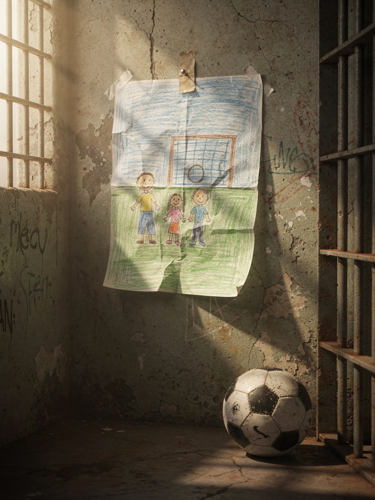

Il Contesto
Dietro le sbarre, il tempo si dilata e il corpo porta il peso di ciò che la mente non riesce ad elaborare. Insonnia, tensioni, rabbia che non trova uscita: non sono debolezze, sono risposte umane a una condizione estrema. Il carcere comprime l'esistenza in spazi stretti e giornate che si ripetono, e in quel silenzio forzato emergono tutto il dolore, la sofferenza, il disagio e la distanza da sé.
Cosa Facciamo
In questo contesto, portiamo strumenti concreti per lavorare dall'interno, non sulle circostanze, ma su ciò che accade dentro.
- Incontri di gruppo: il cuore del percorso, uno spazio in cui le persone imparano a riconoscere i propri schemi automatici e a non esserne travolte.
- Sessioni individuali periodiche: un accompagnamento più personale per consolidare il lavoro e andare in profondità.
- Un centro ritrovato: un lavoro silenzioso, ma profondo, che nel tempo restituisce qualcosa che il carcere tende a erodere: il senso di avere una scelta.
Obiettivi e Impatto
Il progetto punta a ricostruire, a partire dalla persona, il senso di responsabilità verso se stessa e di empatia verso gli altri. Il nostro obiettivo è restituire alle persone il senso di avere una scelta su ciò che provano e su come agiscono.
I risultati si vedono. Chi partecipa ai percorsi riporta un maggior benessere generale, meno peso nelle preoccupazioni quotidiane e una riduzione significativa dell'impulsività. La rabbia non scompare, ma smette di comandare. Le relazioni migliorano, le tensioni nella convivenza si allentano e il clima cambia. I risultati finora ottenuti ci dicono che è possibile trasformare il tempo della pena in un tempo che vale.